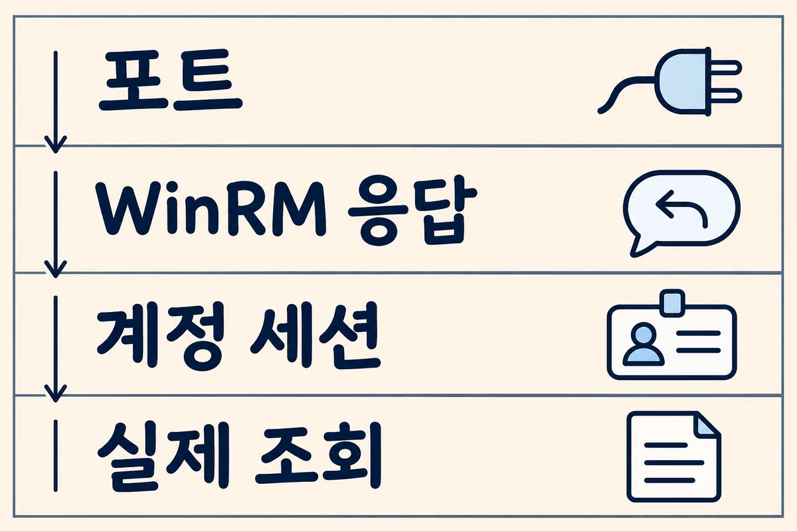
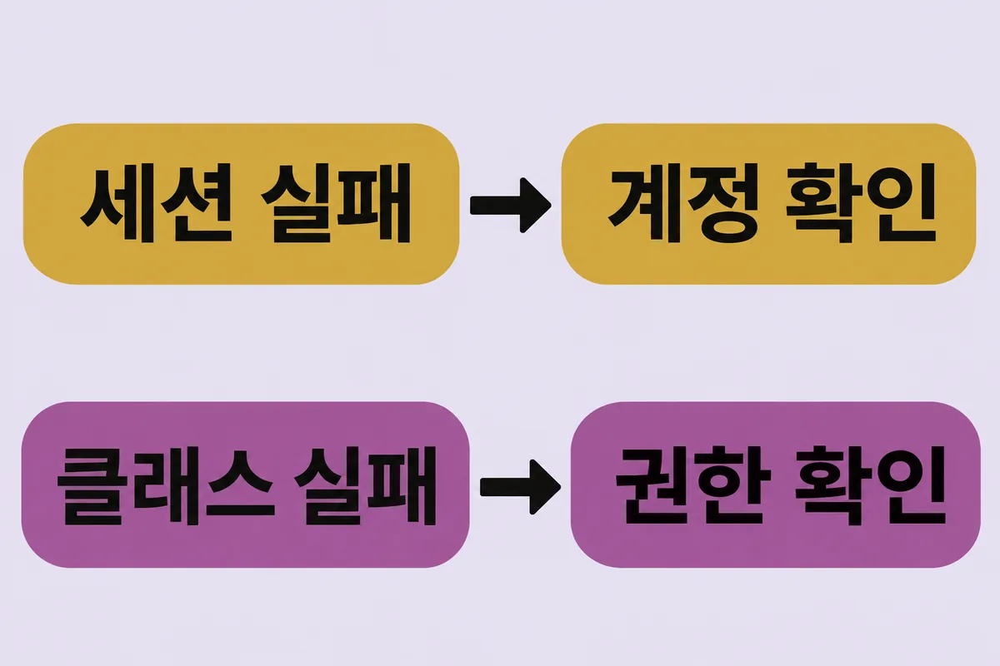

내 PC에서는 Get-CimInstance가 운영체제 정보를 보여 주는데, 관리 대상 PC 이름을 넣으면 오류가 난다. 같은 명령이라도 원격 요청은 네트워크를 지나 계정과 조회 권한을 확인한다. 연결을 못 한 건지, 접속은 했지만 정보를 읽지 못한 건지 네 번의 읽기 점검으로 좁힐 수 있다.
개발 가이드
30초 요약
- Get-CimInstance 원격 오류가 나면 대상 포트, WinRM 응답, 계정으로 만든 세션, 실제 읽기 쿼리를 같은 대상에서 차례로 확인한다.
- WinRM이 응답하면 실제로 작업할 계정으로 세션을 만든다. 같은 세션으로 기본 정보와 원하는 클래스를 읽는다.
- 대상 PC 이름과 포트, 마지막으로 통과한 명령, 실패한 클래스나 오류 코드를 한 줄에 적을 수 있으면 진단이 끝난다.
먼저 알아둘 말
- WinRM
- Windows가 원격 관리 요청을 받는 서비스다.
- CIM 세션
- 같은 원격 PC에 여러 번 조회할 때 재사용하는 연결이다.
- 네임스페이스
- 운영체제나 하드웨어 관련 클래스들이 모여 있는 이름 공간이다.
실전 가이드 · Microsoft Learn · DMTF · 2014. 9. 30
Get-CimInstance 원격 오류의 첫 실패 단계 찾기
승인된 WinRM 접속에서 포트·서비스 응답·세션·클래스 조회를 비교해 담당자에게 넘길 증거를 정리한다.
원격 조회는 마지막으로 성공한 단계부터 본다
Get-CimInstance 원격 오류가 나면 대상 포트, WinRM 응답, 계정으로 만든 세션, 실제 읽기 쿼리를 같은 대상에서 차례로 확인한다.
WinRM은 Windows가 원격 관리 요청을 받는 서비스다. CIM 세션은 같은 PC와 계정으로 여러 조회를 이어 하는 연결이고, 클래스는 운영체제나 프로세스처럼 읽을 정보의 종류다. 오류 메시지에 원격 연결 문제가 함께 표시돼도 세 단계의 성공 범위는 다르다.
예제는 도메인에 가입한 Windows PC에서 Windows PowerShell 5.1을 열고, 사내 관리 대상 PC 한 대에 현재 도메인 계정으로 접속하는 상황이다. 이름과 포트는 담당자가 승인한 WinRM 주소를 사용한다. 5986은 HTTPS 예시이며 조직에서 다른 포트를 쓴다면 세 명령 모두에 같은 값을 넣는다.
- 장애가 난 곳과 같은 Windows PC에서 승인된 대상 이름과 포트의 TCP 연결을 확인한다.
- 같은 이름과 포트에서 Test-WSMan으로 WinRM의 식별 응답을 확인한다.
- 실제 조회에 사용할 계정으로 New-CimSession을 실행해 세션을 만든다.
- 같은 세션에서 운영체제 정보와 실패한 클래스를 차례로 읽고 오류 위치를 기록한다.

1. 대상 PC의 포트까지 열리는지 본다
원래 조회가 실패한 Windows PC에서 그대로 실행한다. 다른 관리 서버에서 성공한 결과는 내 PC에서 같은 경로가 열린다는 뜻이 아니다. 예시에서는 PC 이름 전체와 포트를 변수에 한 번만 적어 다음 단계에서도 재사용한다.
$target = 'pc01.example.com'
$port = 5986
$endpoint = @{ ComputerName = $target; Port = $port }
Test-NetConnection @endpoint -InformationLevel DetailedTcpTestSucceeded가 False면 RemoteAddress와 지정 포트부터 확인한다. 이름이 풀린 주소가 관리 대상과 다르면 이름이나 DNS 기록을 담당자에게 대조한다. 주소가 맞으면 현재 망의 접근 정책과 대상 PC의 수신 설정을 확인할 차례다. True면 그 포트에 연결할 수 있다는 신호를 얻은 것이다.
오류가 간헐적이면 성공과 실패 시각을 구분한다. 같은 주소와 포트를 반복해서 확인하고 결과가 바뀌는지 기록하면, 계정 문제를 점검하기 전에 연결 경로의 변화 여부를 전달할 수 있다.
2. 열린 포트에서 WinRM 응답을 확인한다
같은 주소와 포트에 WinRM이 답하는지 확인한다. 예제의 HTTPS 환경에서는 UseSSL을 함께 지정한다. 사내에서 승인된 기존 HTTP 구성을 쓰는 곳은 승인된 포트로 바꾸고 여기와 다음 세션의 UseSSL을 모두 빼서 동일한 방식으로 검사한다.
Test-WSMan @endpoint -UseSSL -ErrorAction StopWinRM이 답하면 ProtocolVersion 같은 식별 정보가 돌아온다. DMTF 표준에서 서비스 식별과 자원 조회는 별도 요청이다. 예제는 Authentication을 지정하지 않아 현재 계정까지 검증하지 않는다. 여기서만 실패하면 프로토콜, 리스너 설정, HTTPS 인증서의 이름과 신뢰 상태를 점검한다.
3. 실제로 쓸 계정으로 세션을 만든다
서비스가 응답했다면 현재 계정으로 연결을 확인한다. 자동화 계정에서 난 문제라면 담당자가 승인한 실행 환경에서 같은 계정으로 점검한다. 내 계정 결과만으로 자동화 계정의 권한을 추정하기 어렵다.
$options = New-CimSessionOption -UseSsl
$session = New-CimSession @endpoint -SessionOption $options -ErrorAction Stop앞 단계가 HTTPS였으므로 여기에도 HTTPS 옵션을 쓴다. 승인된 HTTP로 점검 중이라면 옵션 첫 줄과 -SessionOption 참조를 함께 뺀다. 세션을 만들 때 연결 검사 건너뛰기 옵션은 사용하지 않는다. 이 단계에서 거부되면 인증 방식, 현재 로그온 계정과 승인된 접속 정책을 대조한다.
문제가 나는 계정과 이미 접속이 되는 계정이 있다면 담당자가 확인한 범위에서만 차이를 비교한다. 계정을 더 높은 권한으로 바꾸면 실행 자체는 될 수 있어도 원래 작업이 왜 막혔는지 좁히기 어렵다. 원래 계정으로 세션을 만들 수 있는지 먼저 기록한다.
4. 같은 세션으로 기본 정보와 원하는 클래스를 읽는다
운영체제 이름을 먼저 읽은 뒤 실제 작업에 필요한 클래스를 조회한다. 아래 두 번째 클래스는 CPU 정보 예시다. 문제를 일으킨 네임스페이스와 클래스가 따로 있다면 두 번째 명령에서 그 값만 바꾼다. try/finally는 두 번째 조회가 실패해도 이번에 만든 세션을 정리한다.
try {
Get-CimInstance -CimSession $session -Namespace root/cimv2 `
-ClassName Win32_OperatingSystem -ErrorAction Stop |
Select-Object CSName, Caption, Version
Get-CimInstance -CimSession $session -Namespace root/cimv2 `
-ClassName Win32_Processor -ErrorAction Stop |
Select-Object Name, NumberOfCores
} finally {
Remove-CimSession -CimSession $session
}첫 결과의 CSName을 승인받은 대상 PC의 컴퓨터 이름과 비교한다. 이름이 맞고 운영체제가 조회되면 그 계정으로 원격 기본 클래스 하나를 읽은 것이다. 다음 명령에서만 실패하면 정확한 네임스페이스와 클래스가 그 대상에서 제공되는지, 해당 계정에 그 범위의 원격 읽기 권한이 있는지 확인한다.

오류가 처음 난 곳을 한 줄로 남긴다
| 마지막으로 확인한 상태 | 다음에 확인할 것 |
|---|---|
| TCP 포트 연결 실패 | 대상 이름·포트와 접속 경로 |
| TCP는 성공, WinRM 응답 실패 | HTTP·HTTPS, 리스너와 인증서 |
| WinRM은 응답, 세션 생성 실패 | 현재 계정·인증 방식·접속 정책 |
| 기본 클래스만 성공 | 실패한 클래스·네임스페이스·읽기 권한 |
예를 들어 운영체제 이름은 나왔지만 대상 클래스에서 ‘Invalid class’가 나왔다면, 클래스 이름과 네임스페이스, 대상 Windows 버전부터 대조한다. ‘Access denied’라도 어느 단계에서 거부됐는지에 따라 담당자에게 전달할 항목이 달라진다. 이름이 맞는데 결과만 비어 있다면 동일 클래스의 필터와 대상에 실제 인스턴스가 있는지를 확인한다.
담당자에게는 실행 시각, 출발 PC의 망 구간, 대상 이름과 포트, 계정 종류, 성공한 마지막 명령과 첫 오류 전문을 보낸다. 클래스 조회에서 실패했다면 네임스페이스와 클래스도 포함한다. 인증서 검사를 끄거나 방화벽 범위를 넓히는 변경은 담당자가 접속 정책을 확인할 때까지 보류한다.
도달·응답·세션·조회를 나눠 검사하면 마지막 성공 결과로 네트워크 담당자, WinRM 관리자, WMI 권한 담당자에게 각각 확인할 일을 전달할 수 있다.
Microsoft 명령 문서와 DMTF 표준으로 동작을 대조했다. PC 이름과 판정 사례는 가상이며 운영 장비에서 명령을 실행한 결과는 아니다.
참고한 자료
원격 조회를 복구하려면 처음 멈춘 지점부터 고친다. 포트까지 닿았는지, WinRM이 응답했는지, 실제 계정으로 무엇을 읽었는지를 남기면 같은 오류가 반복될 때도 같은 순서로 다시 좁힐 수 있다. 대상 PC 이름과 포트, 마지막으로 통과한 명령, 실패한 클래스나 오류 코드를 한 줄에 적을 수 있으면 진단이 끝난다.